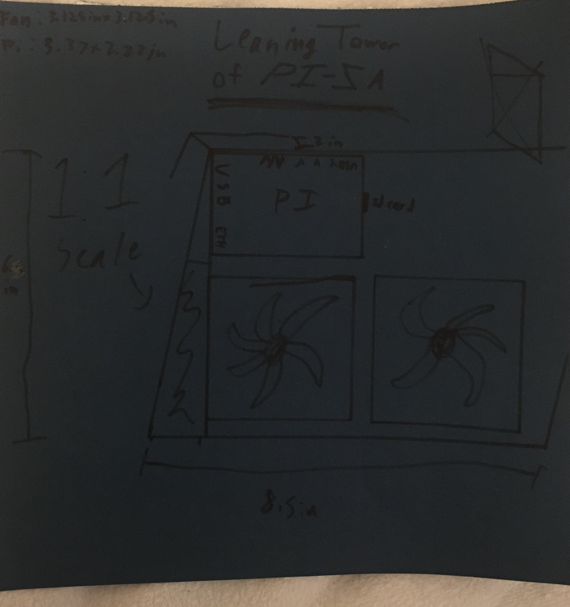
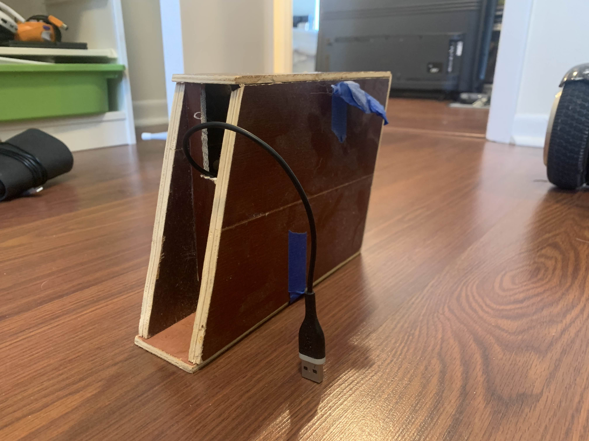
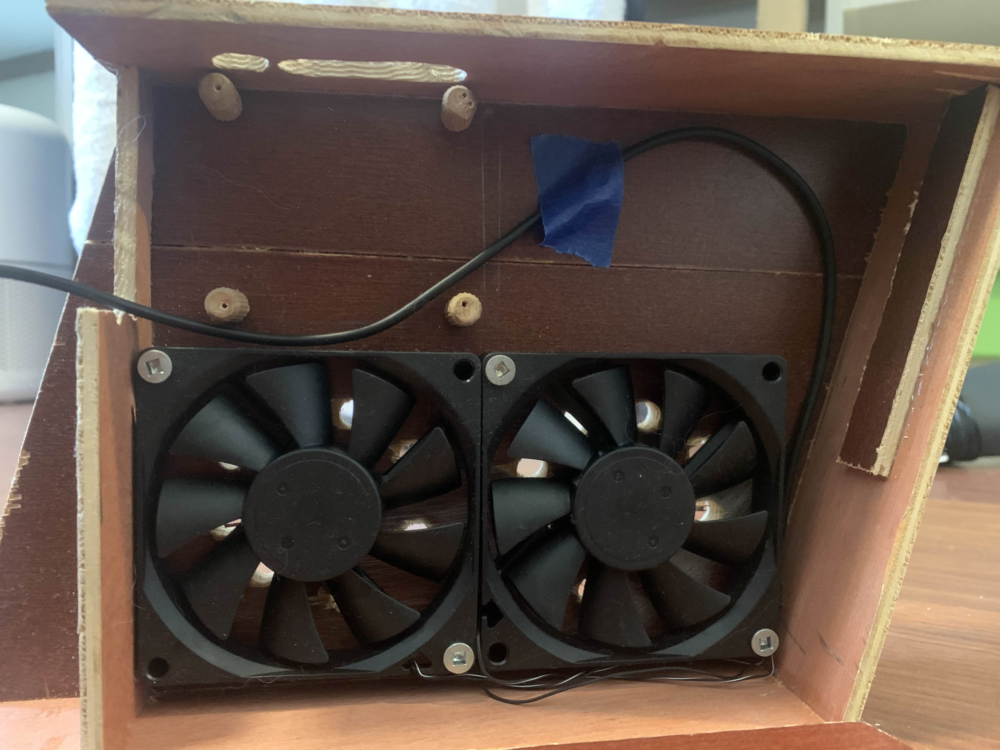
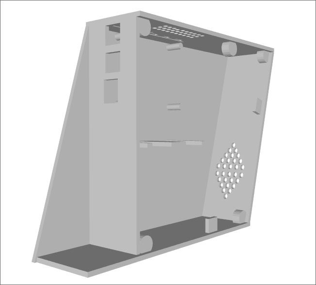
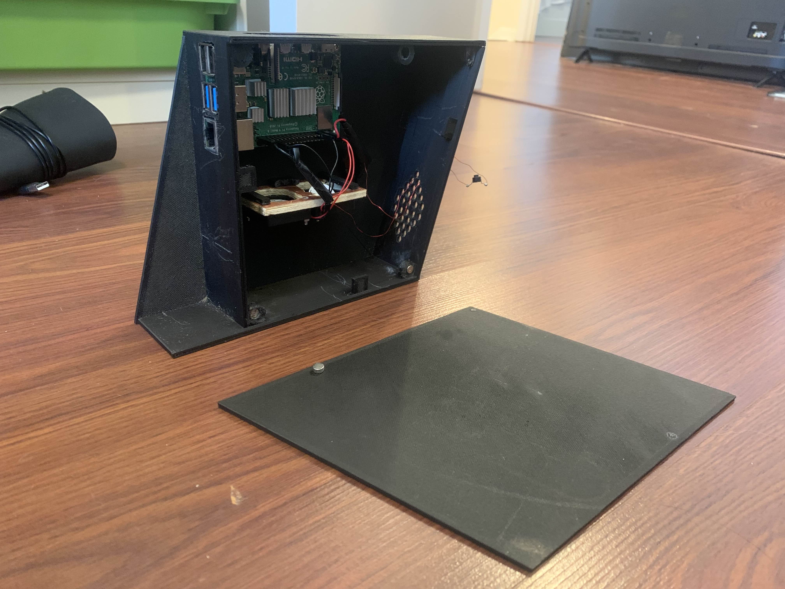
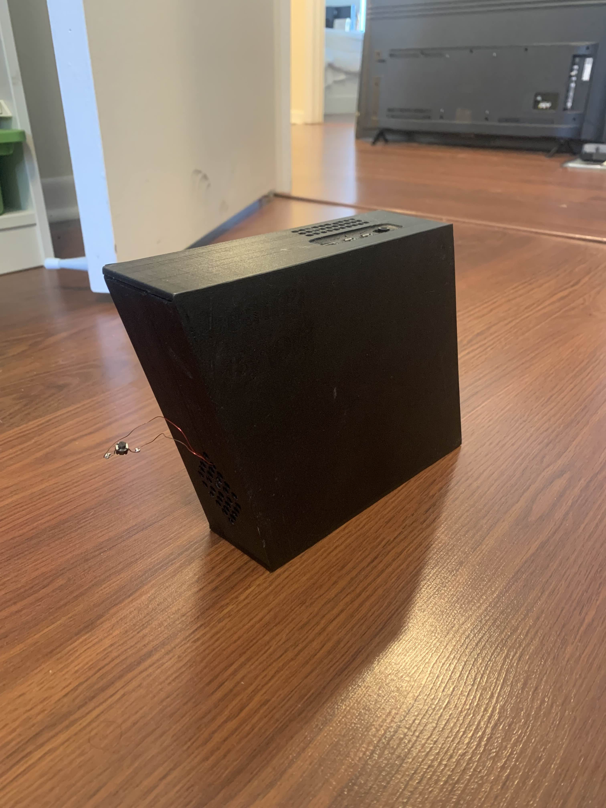

I love procrastinating
I have a Raspberry Pi which I use for retro gaming and web servers. If you don't know what an Raspberry Pi is, it's a credit card-sized computer that's used for hobby projects. I've been wanting to make a casing/shell for it because I like customizing my things. I came up with a bunch of styles such as a flat slab and a spherical design, but I eventually settled on a hilarious pun: the Leaning Tower of Pi-sa. Get it? Pisa but with a Raspberry Pi? *laughs in html/css* Well, I thought it was funny. The case would look like a PC tower, but leaning backwards, hence the name. Below is the original design (and yes I made a blueprint).
I got to work the next day, following my design's specifications to the approximate tee. This was my first time making something out of wood, so it was a little sloppy. I had these boards left over from a kitchen, so I used those. The case needed a cooling system, so I gutted a cooling pad and used the fans to expel air from the case. This causes new air to come into the case, thus cooling the whole thing. I was not too proud of the I/O, but it's a prototype. After all, da Vinci didn't paint the Mona Lisa without doodling as a kid. Here's the finished design:
 So it's been over a year since the previous paragraph was written. I'm finally getting around to finishing this blog post hehe. Anyways, after enjoying the novelty of this fun wooden design, I thought, "Huh. What if I made this out of plastic?" So I started thinking. Thinking some more. And I thunk! I opened up a fun website called TinkerCAD (very nice for beginners and simple designs) and designed a fun little case incorporating some actual I/O (who woulda knew?) and two MUCH smaller case fans (who woulda known?).
I started wondering, how the hell am I gonna print this design? I don't have a 3D printer. But luck struck with possible the greatest timing. My neighbor, Randy, has a 3D printer. Hell, he invents stuff for a living! He wanted to help me out, so I sent him my design, and after a bit of back and forth with revisions, he printed the case in a black PLA filament.
 What a beaut! This thing looks AMAZING! I had to sand down some of the I/O to get it to fit correctly and I rigged the fans into place with old wood and hot glue. Also, yes, that is a button hanging out the back, and yes, it is a power button. No I will not be securing it to anything. It's fine just the way it is!
I suppose I have to write some closing statement or something here. Thanks Randy! You're a pretty nice dude. TinkerCAD is a very nice website. Also 3D printers are really frickin expensive so I don't think I'll have one anytime soon. Anyways, peace out and stay funky